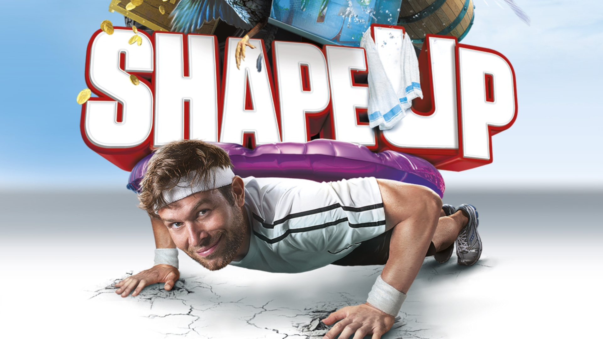

I worked as a programmer on For Honor's UI team leading up to the E3 showcase in 2015. In that time I worked mostly on the UI framework used by the team and owned a few UI elements, screens, and experiences.
I was lucky enough to contribute to Shape Up for a short time leading up to launch. Shape up is a fitness game for the Xbox One Kinect aiming to gameify your workout. My contribution was to the initial experience where the player is introduced to the game mechanics, controls and other important information.
Working on Watch_Dogs was a dream come true: my first foray into AAA game development. This role gave me an opportunity to work on and ship a title across Xbox 360, Xbox One, PS3, PS4 and PC.
On Watch_Dogs I worked on the UI team primarily optimizing the 3D aspects of the UI for performance and memory. I also had a chance to contribute to some new menus and hud elements. In particular I spent a lot of time working on the large suite of 3D indicators that appear above characters, objects, objectives and so-on.